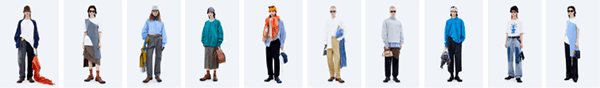
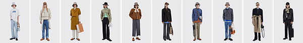
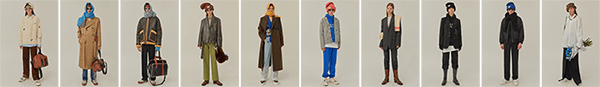
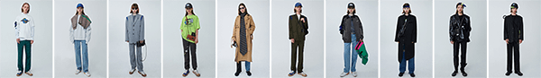

ADER
Blue Mark
ader error
the
az original
collection
the world
ader(아더)는 2014년 설립되었으며 패션을 기반으로 한 커뮤니케이션 브랜드입니다. ader는 'but near missed things' 이라는 브랜드 슬러건, 철학을 바탕으로 새롭게 느낄 수 있는 collection을 선보입니다.
Aesthetic Drawing
F4
Fun work
F3
Unique feeling
F2
Error
F1
ader collection
project #11
- -
- +
- 1F
- 2F
- 3F
- 4F
ader
블루 마크는 아더 브랜드의 가품 근절을 통해 가품으로부터 소비자를 보호하고 정품인증과 소비자 보호를 넘어 청렴한 문화 의식을 알리기 위한 문화 캠페인이다. 이를 위해 만들어진 ‘블루 마크 택’은 아더가 제조한 정식 제품임을 보증하는 역할을 한다. 이 캠페인은 블루 컬러에서부터 시작되는데, 여기서 블루라는 컬러는 ‘청렴함, 순수함, 오리지널리티’의 의미를 함축하고 있다.